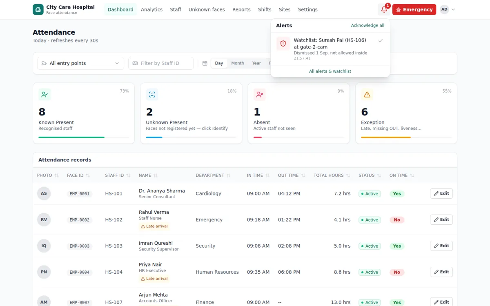
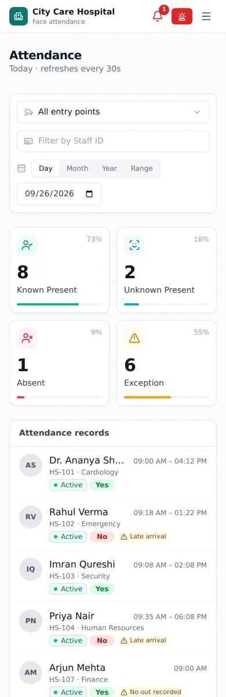
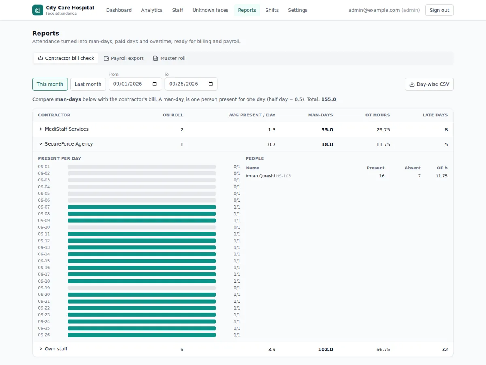
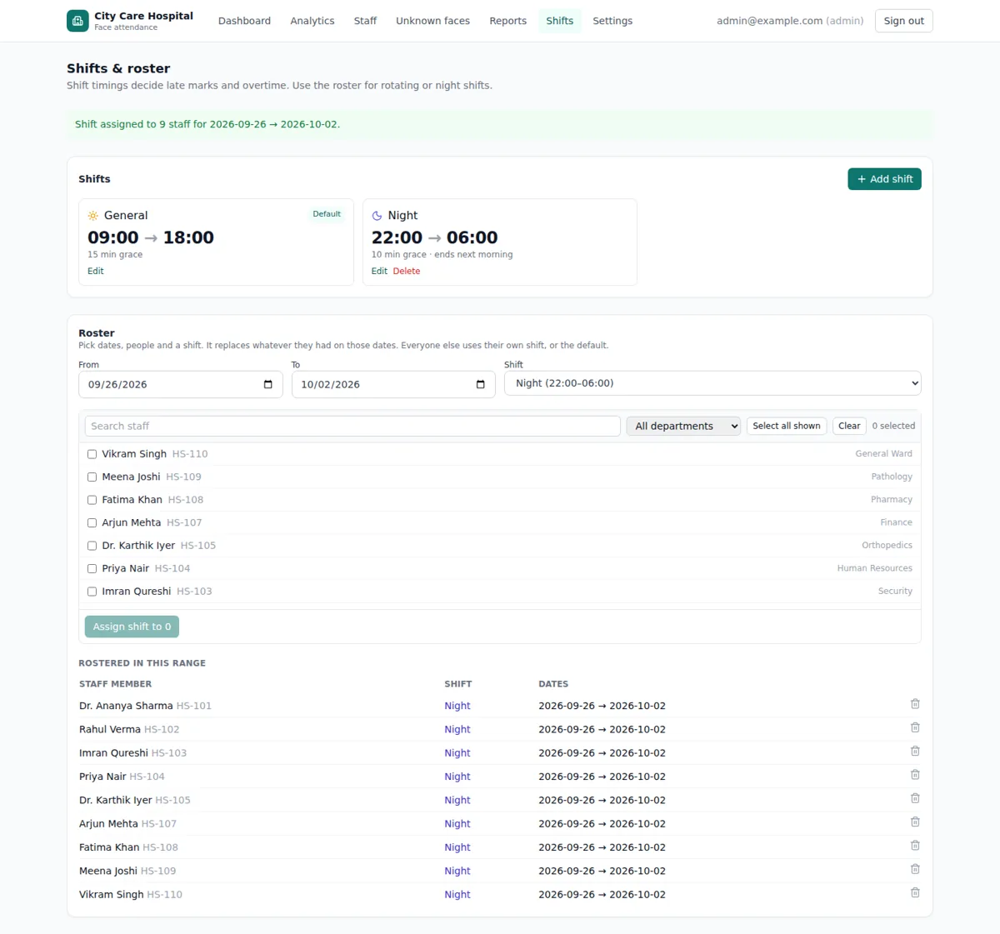
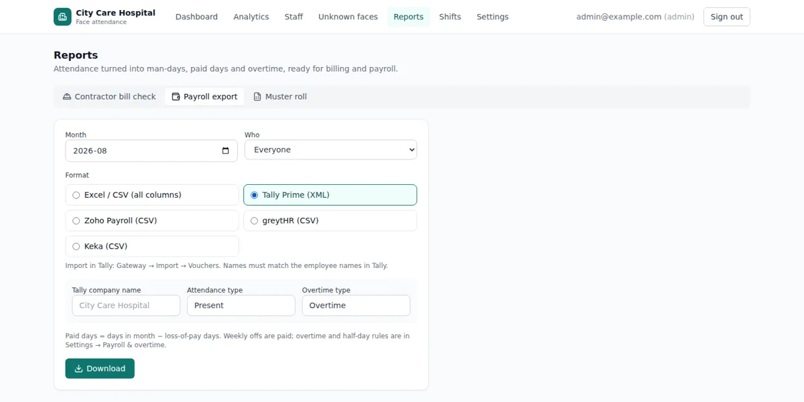
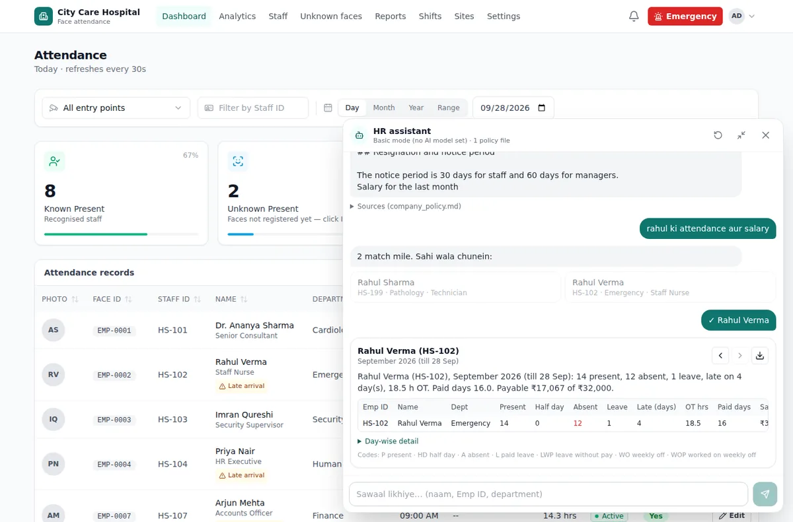
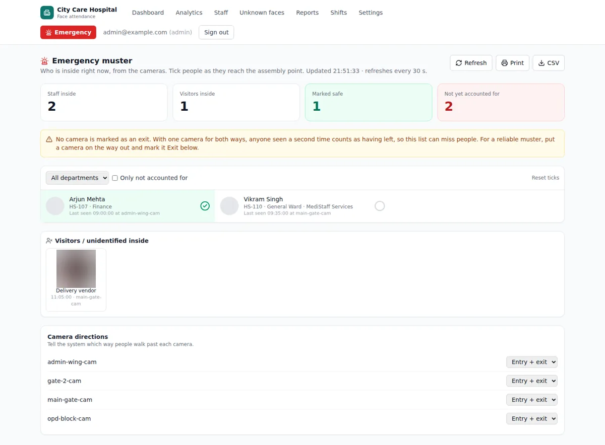
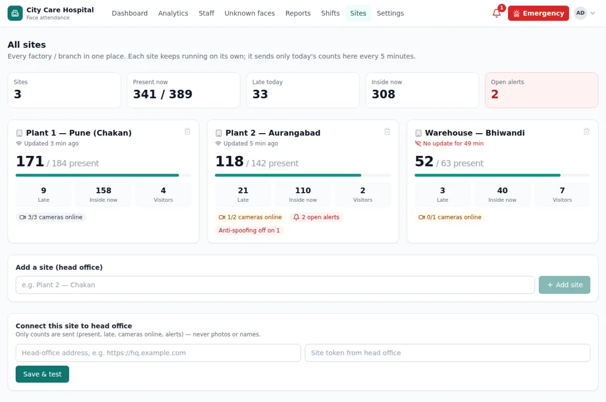
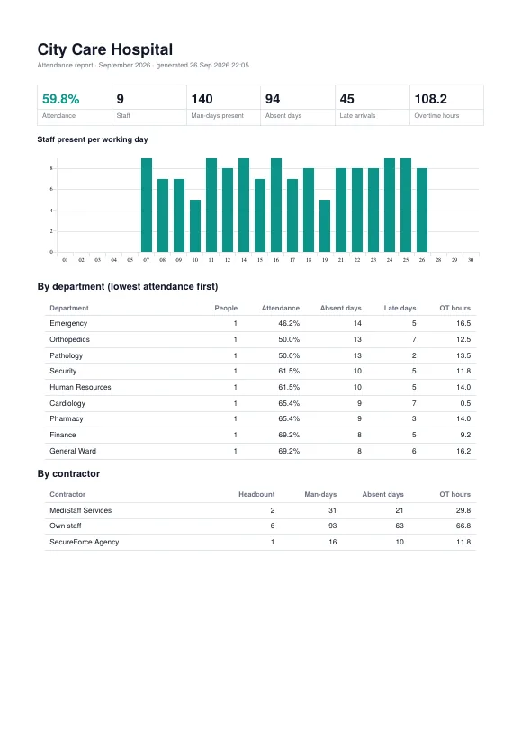

Attendance that marks itself. Payroll that adds up.
Staff walk past the camera and their IN/OUT is recorded. No cards, no fingerprints, no proxies. Shifts, leave, PF / ESI and payslips in one place.
- Contractor man-day check
- PF / ESI / PT + payslips
- No per-user fee


Screenshots with sample data
Old attendance systems leak money every month
Cards get shared, registers get filled later, and every month-end turns into an argument.
Buddy punching
One person swipes a card or signs the register for an absent friend.
Register fraud
Paper registers get filled at day-end, with times nobody can verify.
Contractor bill disputes
The contractor bills 30 workers. You can't prove how many actually came.
Payroll errors
Manual OT, half-day, night-shift and PF maths leads to wrong salaries.
Up and running in 3 steps
Install the camera
We place a camera at your gate and set up the server at your site, or a small edge box with the cloud option.
Enroll your staff
Add people with a photo or bulk upload (CSV + photos). Tag department, shift, contractor and salary.
Get reports & payroll
IN/OUT is recorded automatically. Run payroll, download payslips and files, or export to your software.
Features
See today's attendance at a glance
Present, absent, late and exceptions update every 30 seconds. Unknown faces are handled from the same screen.
- Register, link or ignore unknown faces from the dashboard
- Fix an IN/OUT time with a reason; manual fixes are never overwritten
- Watchlist alerts with a bell and beep
- Business, school or hospital theme and wording
Match the contractor's bill to real man-days
Every worker is tagged to a contractor. See on-roll count, average present, man-days, OT and late days per contractor.
- Day-wise man-day grid per contractor
- Day-wise CSV for the contractor
- Muster roll grid export

Day, night and rotating shifts, handled
Set shift timings and grace minutes, then roster people for date ranges. Night shifts count as one working day.
- OT, half-day and late rules
- Per-person weekly off and holidays
- Rotating rosters for hospitals and plants

From attendance to payslip in one run
Salary structure or a simple gross template, with Indian statutory rules applied.
- PF, ESI and professional tax (supported states)
- Payslip PDF, salary register, bank NEFT file
- EPFO ECR and ESIC files
- Leave types CL / SL / EL with balances and carry-forward
- Lock the month once payroll is final
- Export to Tally XML, Zoho, greytHR, Keka or CSV

Ask in plain words, get the report
“Show Rahul's attendance and salary.” The assistant finds the person, you confirm, and it shows the report. Policy questions are answered from your own policy documents.
- Figures come from the payroll engine, not the AI
- Salary visible to admins only
- Works without an AI model too (basic mode)
- Every report is logged

Know who is inside, right now
During a fire drill or emergency, open the muster page and tick people as they reach the assembly point.
- Entry / exit camera directions
- Visitors and unidentified people inside
- Print or CSV in one click

Everything HR needs, in one place
Multi-site HQ dashboard
Present, late and alerts from every plant or branch on one screen. Sites share counts only, never photos.
WhatsApp summaries
Alerts, a daily summary and a monthly summary sent to the numbers you choose.
Vehicle entry log (add-on)
Gate camera reads number plates: trucks, visitor and staff vehicles with time and photo, plus watchlist alerts.
Monthly PDF report
Attendance, department and contractor summary as a ready PDF.
Mobile-friendly
Check today's attendance from your phone.
Roles & audit log
Admin, HR and Viewer roles, login lockout after failed tries, and a full audit trail.
DPDP consent & deletion
Consent records, data deletion and retention rules as per the DPDP Act.


Built for how you work
Pay contractors only for man-days that happened
- Every worker tagged to a contractor; day-wise man-day report
- Night shifts counted as one day, with OT and half-day rules
- Emergency muster shows who is inside the plant right now
- PF / ESI / PT, payslips and bank file at month-end
Attendance without roll-call time
- Students and teachers marked as they enter
- School theme and words: Student, Teacher, Class
- Watchlist alert when a flagged face appears at the gate
- Daily summary to the principal on WhatsApp
Touch-free attendance for 24×7 shifts
- No fingerprint scanner to touch in clinical areas
- Rotating and night-shift rosters for nurses and doctors
- Department-wise reports with Staff wording
- Emergency roll call for drills and evacuations
Clean attendance, straight into payroll
- Late marks, half-days and OT from your rules
- Leave balances: CL, SL, EL and holidays
- “Ask HR” chatbot for policy questions
- Many branches on one HQ dashboard
On your server, or in the cloud
On-premise
Everything runs on a server at your site. Faces and records never leave your building. Daily attendance works without internet.
Cloud + edge box
Open the dashboard from anywhere. Face matching still happens on a small box at your site; each client gets a separate database.
Simple plans, per camera
Per camera, not per person. Setup once per site. Your quote depends on sites, gates and hardware.
Attendance
Face attendance with shifts and exports
- Recognised by name
- Up to 200 people per camera
- Unknown faces
- Detected, no limit
- HR / admin logins
- No limit
- Number plates
- Available as an add-on
- Face IN / OUT with liveness check
- Shifts, OT, half-day, weekly-off rules
- Export to Tally, Zoho, greytHR, Keka, CSV
- Unknown faces on the dashboard
Attendance + Payroll
Everything from gate to payslip
- Recognised by name
- Up to 200 people per camera
- Unknown faces
- Detected, no limit
- HR / admin logins
- No limit
- Number plates
- Available as an add-on
- Everything in Attendance
- PF / ESI / PT, payslips, bank file
- Leave balances and holidays
- Contractor man-day bill check
- Emergency muster, watchlist, WhatsApp summaries
Multi-site
For companies with many plants or branches
- HQ dashboard
- Included
- Deployment
- On-premise or cloud + edge box
- Everything in Attendance + Payroll
- All plants / branches in one view
No per-employee fee. Plans are per camera, and one camera covers one entry / exit gate. Recognised by name = people you add with a photo (family, domestic help, staff); the camera tells you who it is. Unknown faces are detected without limit and you get an alert with their photo. They never count against your plan.
Camera and server hardware, and WhatsApp (Meta) message charges if used, are quoted at actual cost. Pricing is shared on request. Tell us about your needs and we'll send a written quote by email.
Your data stays with you
Face data is sensitive. The system is built so you stay in control of it.
Stored at your site
On-premise installs keep faces and records on your server. With cloud, face matching still runs on your edge box.
DPDP consent
Consent forms in English and Hindi. Every person knows what is collected and why.
Deletion certificate
When someone leaves or asks, their data is deleted and you get a deletion certificate.
Common questions
Which camera do I need?
A standard IP (CCTV) camera or USB camera at the entry point. We check your existing cameras during the site survey and tell you if anything needs to change.
Is internet required?
Not for daily attendance when installed on-premise; the system runs on a server at your site. Internet is needed for WhatsApp summaries, the multi-site HQ dashboard, the cloud option and the online chatbot mode.
What if someone's face is covered or masked?
The face must be visible to the camera. Covered faces are not marked automatically; they appear on the dashboard as an “unclear face” exception so HR can fix the record in a few clicks.
How many people can it handle?
Each camera recognises up to 200 active people by name. For more people or more gates, add cameras. There is no per-user fee, and unknown faces are detected without any limit.
How is it priced?
Per camera, not per employee, so adding new staff never raises your bill. Setup is once per site. Share your number of sites, gates and staff and we'll email you a written quote.
Can it log vehicles at the gate?
Yes, as an add-on for gate cameras. A camera that sees number plates clearly logs every vehicle with time and photo, so you can match trucks, visitors and staff vehicles with the gate register.
Does it calculate PF, ESI and PT?
Yes. It applies PF and ESI rules and professional-tax slabs for supported states, and creates payslips, the bank NEFT file and EPFO / ESIC files. TDS is entered as a monthly amount. We recommend checking the first month's run with your CA.
Does it work with our payroll or accounting software?
Attendance exports are available for Tally (XML), Zoho, greytHR, Keka and CSV. We match the format to your own template during setup.
Is our data safe? Where is it stored?
On-premise: on your own server at your site. Cloud option: your own separate database, while face matching still happens on a small box at your site. Access is login-based with roles (Admin / HR / Viewer) and an audit log.
Can someone cheat with a photo or video?
A liveness (anti-spoof) check runs before attendance is marked, and suspected spoof attempts raise an alert. No system is perfect, so we calibrate the check for each camera during installation.
Does it support night shifts, OT and rotating weekly offs?
Yes. Night shifts are counted as one working day across midnight, with OT, half-day, holiday and per-person weekly-off rules.
How does it help with contractor labour?
Each worker is tagged to a contractor. The bill-check report shows man-days per contractor, day by day, so you can match the contractor's bill before paying.
What happens in the demo?
A walkthrough of the live dashboard, reports, payroll run and exports, plus a discussion of your site: gates, shifts, staff count and cameras. Then we share a quote.
Book your free demo
Fill in the form and we'll reply by email within 1 working day to fix a demo time.
- Email us
- Or send us a message with this form
- WhatsApp us
- Call us
- India